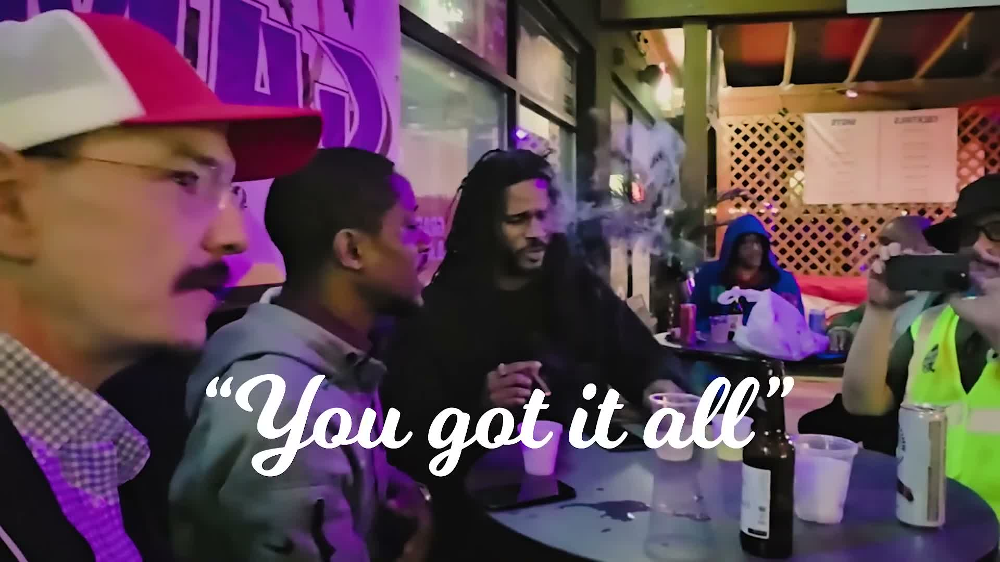

Poster
Poster art concept
A poster-led asset for submissions, one-sheets, and first-look announcements.
A media-friendly gallery for first-look visuals, poster art, road stills, and production moments.
The layout is ready for real stills, captions, and press-kit asset swaps.
Use this independent film gallery as a lightweight media kit with film stills, poster art, and documentary behind-the-scenes photos.
A poster-led asset for submissions, one-sheets, and first-look announcements.

A wide still that emphasizes travel, fatigue, and the in-between texture of the documentary.
A behind-the-scenes frame suited for press kits, social assets, and team updates.
Road footage that communicates movement, distance, and the emotional cost of staying in motion.
A character-forward image for bios, speaking invitations, and program art.
A production-side image that helps the gallery feel like more than a poster dump.